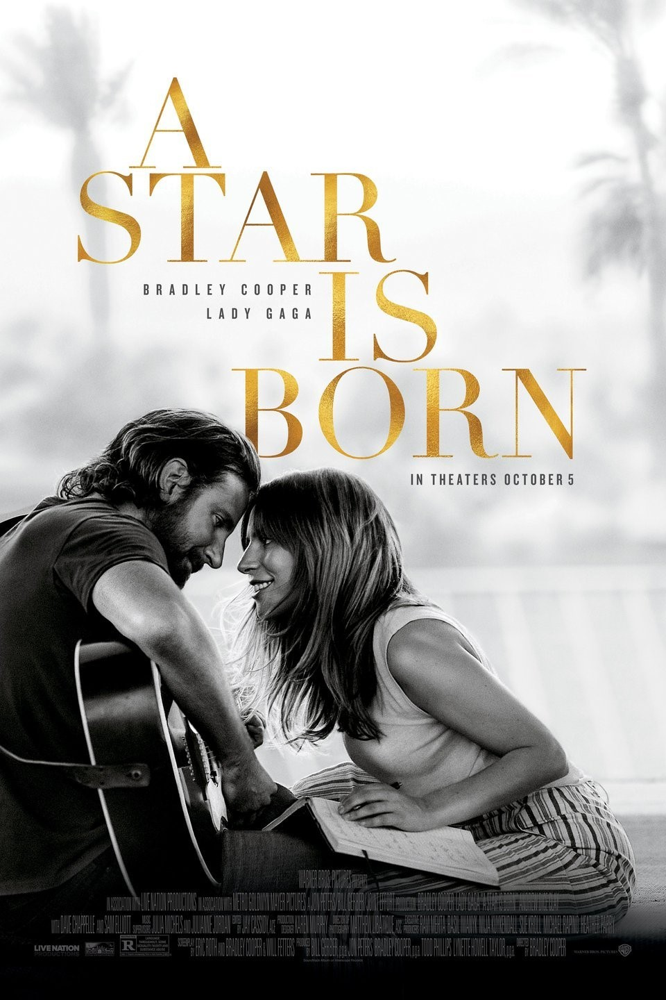

Seasoned musician Jackson Maine discovers -- and falls in love with -- struggling artist Ally. She has just about given up on her dream to make it big as a singer until Jackson coaxes her into the spotlight. But even as Ally's career takes off, the personal side of their relationship is breaking down, as Jackson fights an ongoing battle with his own internal demons. Jackson "Jack" Maine, a famous country rock singer privately battling an alcohol and drug addiction, plays a concert. His main support is Bobby, his manager and older half-brother. After a show, Jack goes out for drinks and visits a drag bar where he witnesses a tribute performance to Edith Piaf by Ally, who works as a waitress and singer-songwriter. Jack is amazed by her performance, and they spend the night talking to each other, where Ally discusses her unsuccessful efforts in pursuing a professional music career. Ally shares with Jack some lyrics she has been working on, and he tells her she is a talented songwriter and should perform her own material.